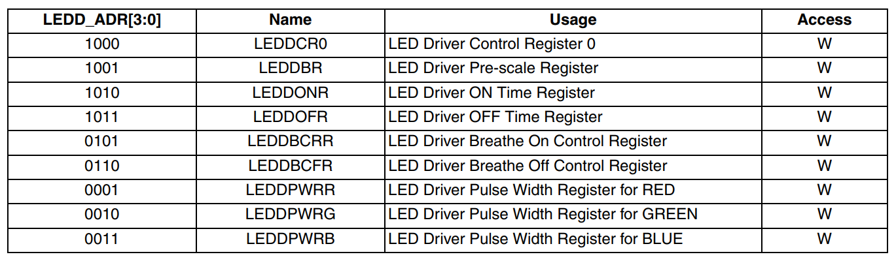

Python on Fomu¶
You can load MicroPython, a small Python implementation, onto Fomu as an ordinary RISC-V binary. A precompiled binary is located in the root of the Fomu workshop files.
Use dfu-util to load it:
dfu-util -D micropython-fomu.dfu
If you’re on a macOS machine, use the following command to connect to the device:
screen /dev/cu.usb*
If you’re on Linux, use the following command to connect to the device,
it will be called ttyACM?:
screen /dev/ttyACM*
If you’re running a version of Windows earlier than Windows 10, you will
need to install a driver for the serial port. Open Zadag again and
select Fomu from the dropdown list. Install the driver for
USB Serial (CDC).
You can then use a program such as Tera Term.
PS> ttermpro.exe
In Teraterm hit New Connection and select the Serial Port Radio
Button. If it is greyed out you might have to change your USB Port
driver for the Fomu.
See Working with Fomu, above.
You should be greeted with a MicroPython banner and REPL:
This is a fully-functioning MicroPython shell. Try running some simple
commands such as print() and hex(9876+1234).
Fomu Python Extensions¶
Fomu’s MicroPython binary contains a few extended Python modules that
you can use to interact with some of the hardware. For example, the RGB
LED has some predefined modes you can access. These are all located
under the fomu module.
Import the fomu module and access the rgb block to change the
mode to the predefined error mode:
import fomu
rgb = fomu.rgb()
rgb.mode("error")
We can also look at some information from the SPI flash, such as the SPI ID. This ID varies between Fomu models, so it can be a good indication of what kind of Fomu your code is running on:
spi = fomu.spi()
hex(spi.id())
Memory-mapped Registers¶
If we look at the generated Fomu header files (to be found for instance in riscv-blink), we can see many, many memory-mapped registers. For example, the major, minor, and revision numbers all have registers:
#define CSR_VERSION_MAJOR_ADDR 0xe0007000
#define CSR_VERSION_MINOR_ADDR 0xe0007004
#define CSR_VERSION_REVISION_ADDR 0xe0007008
#define CSR_VERSION_MODEL_ADDR 0xe0007028
These are special areas of memory that don’t really exist. Instead, they
correspond to hardware. We can read these values using the machine
class. Read out the major, minor, and revision codes from your Fomu.
They may be different from what you see here:
import machine
machine.mem32[0xe0007000]
machine.mem32[0xe0007004]
machine.mem32[0xe0007008]
The CSR_VERSION_MODEL_ADDR contains a single character that
indicates what version of the hardware you have. We can convert this to
a character and print it out.
If you have a production board you will get P as shown below;
chr(machine.mem32[0xe0007028])
If you have a hacker board you will get H as shown below;
chr(machine.mem32[0xe0007028])
Memory-mapped RGB driver¶
The blinking LED is actually a hardware block from Lattice. It has control registers, and we can modify these registers by writing to memory in Fomu. Some of these registers control things such as the timing of the fade in and fade out pulses, and some control the level of each of the three colors.
{kind=link}
There is a wrapper in Fomu’s MicroPython that simplifies the process of writing to these registers. The first argument is the register number, and the second argument is the value to write.
For the LEDDPWR registers, the second argument determines the
brightness, value ranges from 0 to 255.
Try changing the color of the three LEDs:
ADDR_RED_LED_PULSE_WIDTH = 0b0001 # LEDDPWRR
ADDR_GREEN_LED_PULSE_WIDTH = 0b0010 # LEDDPWRG
ADDR_BLUE_LED_PULSE_WIDTH = 0b0011 # LEDDPWRB
rgb.write_raw(ADDR_RED_LED_PULSE_WIDTH, 255) # Red LED fully on
rgb.write_raw(ADDR_GREEN_LED_PULSE_WIDTH, 14) # Green LED mostly off
rgb.write_raw(ADDR_BLUE_LED_PULSE_WIDTH, 1) # Blue LED off
The color should change immediately. More information on these registers can be found in the ICE40 LED Driver Usage Guide.